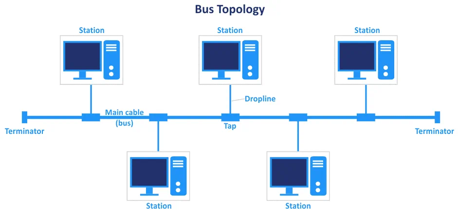
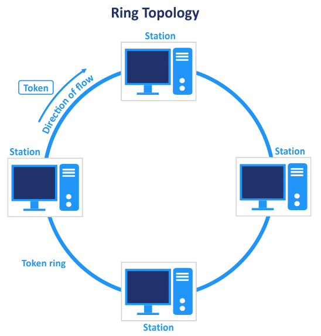
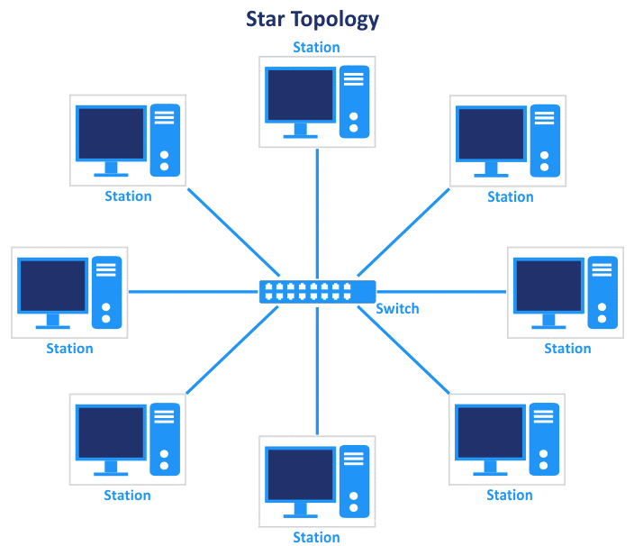

رحلة مع ثلاث طرق لربط الشبكات
- الوصلات السلكية
و هي الأسلاك التي تراها متصلة ببعض الحواسيب أو التي تراها ببعض مراكز البيانات – إن كنت محظوظاً بما يكفي لتدخل أحدها – حيث أنك ترى عدداً كبيرة من الأسلاك حتى يصعب عليك معرفة عددهم.
ويختلف نوع الوصلات السلكية بإختلاف البنية التحتية للشبكة والتطبيقات المستخدمة، فكل نوع من أنواع الوصلات لديه خواص محددة تساعده على أداء محددة مثل:
- السلك المزدوج (المفتول) [Shielded twisted pair cable]
- السلك غير المزدوج [Unshelled twisted pair cable]
- سلك الألياف الضوئية [Fiber Optic cable].
شبكة لاسلكية
هي طريقة لا يتم فيها توصيل أسلاك و لكن الشبكة تكون موجودة و منشأة، ليس ضرباً من الخيال و إنما يقوم جهاز بنشر موجات راديو محددة تستقبلها الأجهزة و الحواسب الموجودة، كما أن كل جهاز مستقبل يستطيع ترجمة هذه الموجات الراديوية إلى إتصال شبكي. وتختلف ايضا أنواعها باختلاف التطبيقات المستخدمة، نذكر لك عنها مثلان هما الـ Wi-Fi و الـ Wi-Max.
طرق ربط الشبكات:
شبكة خطية:
تُعتبر أبسط تصميم للشبكة يتم فيها نقل وتبادل المعلومات عن طريق ناقل رئيسي وتتفرع منه توصيلات لبقية الاجهزة في الشبكة.
- قليلة التكلفة نظرا لوجود ناقل بيانات واحد يربط بين جميع اجهزة الشبكة.
- تعطل أي جهاز لايوثر علي عمل الشبكة.
ميزاتها:
- قصر المساحة المغطاة. فمن الصعب التوصيل الخطي المتصل مع وجود العديد من العوائق.
- تعطل الشبكة في حالة حدوث اي قطع في الناقل الرئيسي.
عيوبها:
شبكة حلقية:
هذا النوع من التصاميم لايعتمد علي ناقل رئيسي لنقل البيانات بل يكون كل جهاز في الشبكة يعمل كوسيط ناقل للبيانات.
- قلة التكلفة لوجود خط رئيسي واحد علي شكل حلقة.
- سهولة ادارتها.
ميزاتها:
- تتعطل في حالة تعطل أي حاسب، بكل تأكيد بما أن كل حاسب يمثل جزء من الشبكة فتعطُّلهُ ينتج عنه تعطل الشبكة.
عيوبها:
الشبكة النجمية:
من أفضل التصميمات وأكثرها شيوعا إذ أنهُ يعتمد بشكل أساسي على جهاز شبكي يعرف بالـ switch والذي تُوصَل جميع اجهزة الشبكة علية.
- لايؤثر تعطل اي حاسب بالشبكه علي عملها عدا الـ switch .
ميزاتها:
- تكلفتها عالية مقارنةً بالتصاميم الأخرى نظراً لأن كل حاسب أو جهاز على حده يتصل مباشرة بال switch.